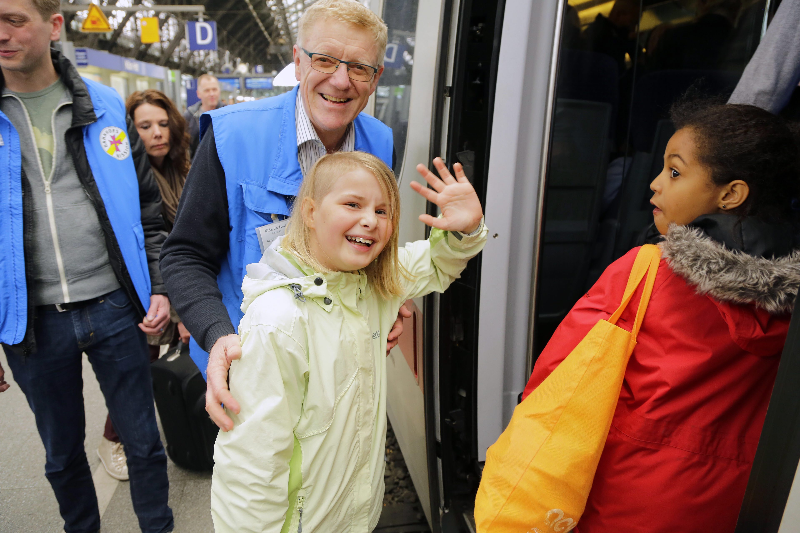
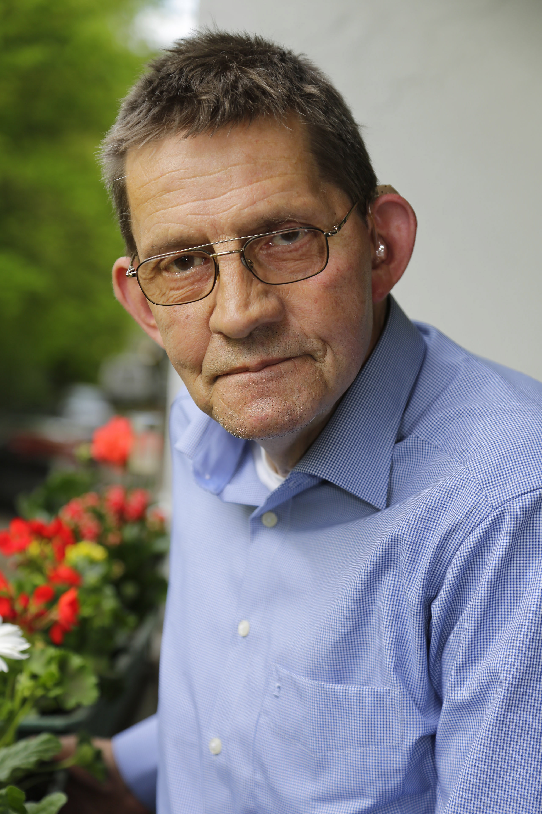
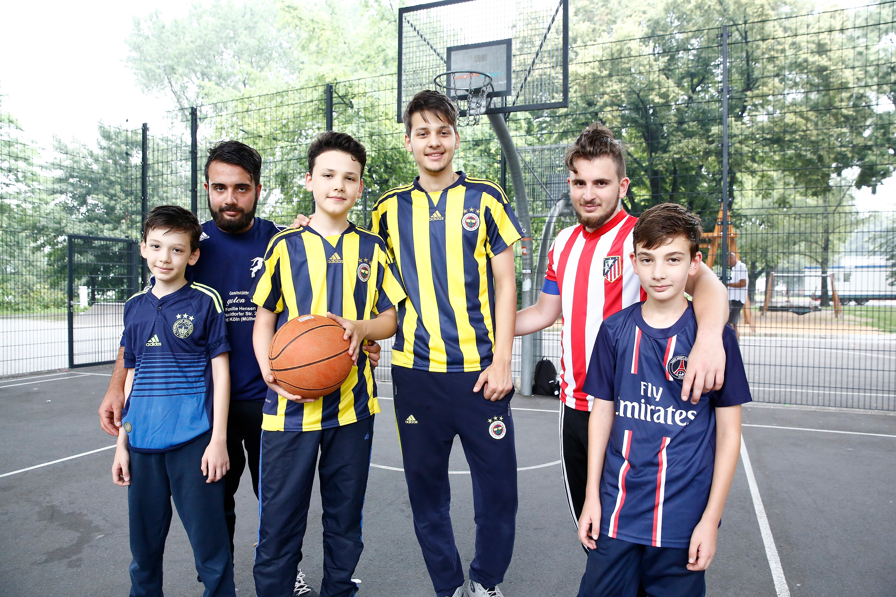
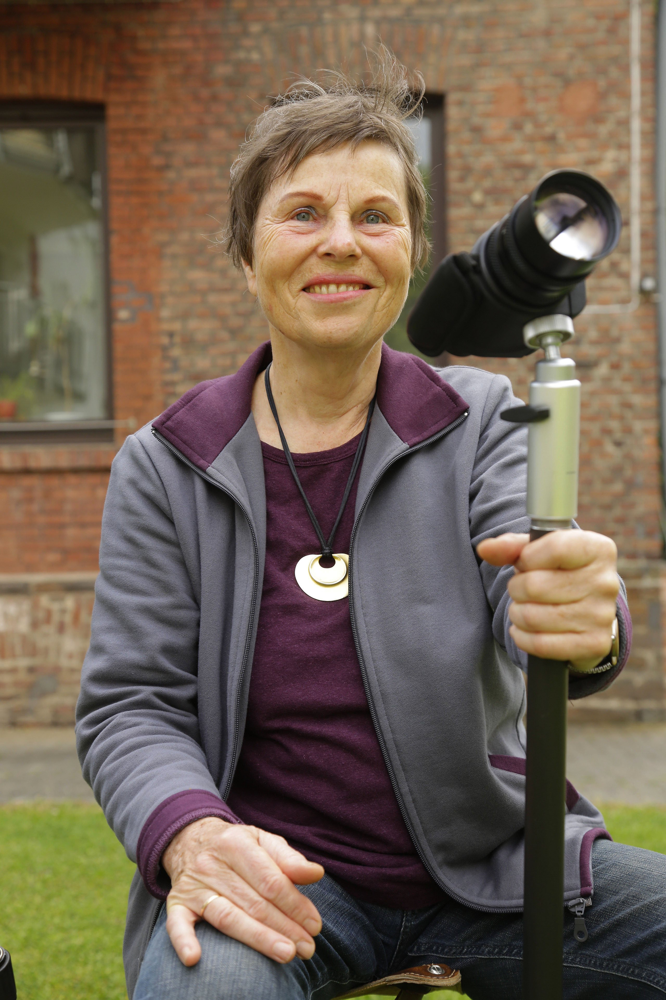
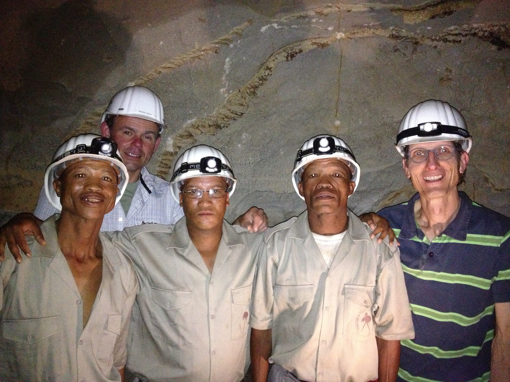

Anne Stephanie Wildermann (geb. Gratzke) arbeitet unter anderem für die Tageszeitung „Kölner EXPRESS“, das Bonner Stadtmagazin „Schnüss“ und als Dozentin.
Tageszeitungen
Zuvor hat sie unter anderem für die „Märkische Allgemeine Zeitung“,
die „Hessisch Niedersäschische Allgemeine Zeitung“ und für den Online-Blog „neukoellner.net“
(
Grimme Online Award 2015) geschrieben.
CouchFM / RadioB2
Außerdem hat Anne Stephanie Wildermann als Moderatorin und Redakteurin
für „Couch-FM“ und „radioB2“ in Berlin gearbeitet.
Rheinische Friedrich-Wilhelm Universität, Bonn
Sie hat Germanistik und vergleichende Literaturwissenschaft an
der Rheinischen Friedrich-Wilhelms-Universität in Bonn auf Magister studiert.
Contact
Kritik? Lob? Frage? Her damit!
In Bearbeitung
Inhalt folgt bald.
CouchFM
Nachfolgend finden sich alle Beiträge von Anne Stephanie für CouchFM, das Berliner Uni-Radio
Neuköllns letzter Gentleman
Der 85-jährige Ali Akdeniz ist vermutlich der letzte Gentleman von Neukölln. Vor allem durch seinen schick-eleganten Modestil fällt er auf.
Der gelernte Schneider ist nicht nur ein Meister seines Handwerks – 60 Anzüge hat er selbst gefertigt – sondern er hat auch ein Händchen für Frauen. Zusammen mit fünf von ihnen hat er insgesamt 18 Kinder.
Seit 1969 lebt Akdeniz in Deutschland. Kommendes Jahr wird er zu seiner Frau in die Türkei zurückkehren und dort seinen Lebensabend verbringen. Doch zuvor traf ihn neukoellner.net zum Interview.
neukoellner.net: Herr Akdeniz, was ist Ihr Lieblingsoutfit? Und warum?
Definitiv der Anzug. Ich wollte schon als zwölfjähriger Junge einen Anzug tragen. Meine Generation und auch die meines Vaters trägt nur Anzüge. Das ist auch in der Türkei so. Die Leute legen viel Wert darauf.
Der Anzug ist ein Teil der türkischen Kultur und erzeugt eine gewisse Vorbildfunktion, die auch ich haben möchte. Außerdem sieht ein Anzug immer hübsch aus.
Und mein Schneiderberuf bringt es natürlich mit sich, dass ich immer elegant aussehe.
Ich besitze 80 Anzüge, von denen ich 60 Stück selbst geschneidert habe.
Auf den Fotos Ihres Blogs habe ich gesehen, dass Sie nie ohne Kopfbedeckung ausgehen. Sie tragen entweder Hut, Mütze oder Cappi. Warum?
Ich muss immer eine Kopfbedeckung tragen! Und diese muss auch immer zu meinem Outfit passen, sonst bin ich nicht komplett (lacht).
Neben Mützen und Hüten trage ich auch Schmuck (zeigt auf Goldringe, Uhr und Halskette), der ebenfalls zu meinen Sachen passt. Schmuck macht eben einen großen Eindruck auf Frauen!
Sie sind ja schon eine Berühmtheit in Neukölln. Wie reagieren die Leute auf der Straße, wenn sie Sie sehen? Wollen die Modetipps von Ihnen?
Mich sprechen viele Leute an und wollen meistens ein Foto mit mir zusammen machen. Oder geben mir ihre Kinder auf den Arm und fotografieren mich mit den Kleinen.
Hier und da will der ein oder andere schon einen Modetipp. Dabei ist es gar nicht schwer, gut gekleidet zu sein. Ich trage meine Anzüge immer passend zur Jahreszeit. Helle und frische Farben im Frühjahr und Sommer und dunkle Töne im Herbst und Winter. Dabei ist meine Lieblingsfarbe rot. Sie trage ich das ganze Jahr über.
Meine Kleidung suche ich mir selbst aus. Ich würde mir niemals von jemanden da reinreden lassen – nicht mal von einer Frau, dabei liebe und vergöttere ich Frauen! (lacht).
Was bedeutet für sie ein guter Modegeschmack?
Dass die Leute einen angucken. Dass man eine große Anziehungskraft auf andere Menschen ausübt. Ich bin eh der Ansicht, dass man viel mehr auf sein Äußeres achten sollte. So wirkt man nie langweilig.
Was haben Sie als Jugendlicher gerne getragen?
Ich war Fußballspieler und habe deshalb gerne Trikots und Sportanzüge angezogen. Und selbst die sahen elegant an mir aus. Ich trage sie heute noch.
Es gab in meiner Jugend keine Phase, in der ich mit meinen Anziehsachen vor meinen Eltern oder der Gesellschaft rebellieren musste. Natürlich hatte ich Streit mit meinen Eltern und es gab mal schlechte Zeiten, aber so was kommt in jeder Familie vor.
Was bedeutet Ihnen Neukölln?
Ich mag es, dass hier so viele unterschiedliche Menschen leben. Mit unterschiedlichen Kulturen und Religionen. Dadurch kann man viele Sachen entdecken: wie ausländisches Essen.
Allerdings können Menschen mit unterschiedlichen Hintergründen auch Ärger machen. Es kann zu Problemen kommen. Aber so was ist normal.
Wo sind Ihre Lieblingsplätze in dem Bezirk?
Ich habe keine bestimmten hier in Neukölln. Ich bin überall in Berlin unterwegs. Vor allem in Hohenschönhausen, denn dort arbeite ich zusammen mit einem Bekannten in einem Schneideratelier. Als ich noch jünger war, bin ich viel am Wochenende in Discos tanzen gewesen, in der Bismarckstraße oder am Bahnhof Zoo.
Mittlerweile bin ich auch viel außerhalb Berlins unterwegs. Ich fahre dann mit meiner Familie raus aufs Land, dort haben wir einen Garten und wir pflücken Obst und essen es. Das gibt einem neue Kraft.
Dieser Artikel ist am 16. September 2014 auf neukoellner.net erschienen. Foto: Anna Blattner
One-Woman-Show
Ihre Arbeitsgeräte sind Peitsche, Seil und Klammer. Ihre Spezialität: Bondage. Zu Besuch bei einer Neuköllner Sexarbeiterin.
Die 36-jährige Marlen arbeitet seit fünf Jahren in der Erotikbranche. Davor hat sie Jura und Kulturwissenschaften studiert.
Neben ihren Sessions in ihrem Neuköllner Studio will sie sexuelle Dienstleistungen auch für Frauen etablieren. Ein Gespräch über sexuelle Energie, junge Kundschaft und unwürdige Zustände in der Branche.
neukoellner.net: Marlen, fasse bitte kurz zusammen, was Du machst.
Marlen: Ich bin Sexarbeiterin und die Grundlage meiner Arbeit ist das tantrische Berührungsritual, das ich mit dominantem Spiel kombiniere.
Ich arbeite also mit Elementen des BDSM. Charakteristisch für meine Arbeit ist, dass ich meinen eigenen Körper einbringe. Ich bewege mich auf, über oder mit dem Klienten.
Bei den dominanten Spielen habe ich mich auf Bondage, die Kunst des erotischen Fesselns spezialisiert, weil sich dort Sinnlichkeit und Dominanz so hervorragend ergänzen.
Gibt es da spezielle Techniken?
Ich praktiziere Shibari, die japanische Tradition des erotischen Fesselns. Das bedeutet mehr, als nur jemanden bewegungsunfähig zu machen. Die Person, die gefesselt wird, gelangt währenddessen in einen Zustand der Hingabe und des Loslassens.
Der Akt des Fesselns hat intensive Auswirkungen auf Körper und Geist. Dabei nutze ich Wachs, Peitschen oder Klammern. Doch das wichtigste Spielzeug sind meine Hände. Die Berührung zwischen mir und dem Klienten ist sehr wichtig.
Welche Initialzündung gab es für Dich, als Sexarbeiterin zu arbeiten?
Ich war schon als Physiotherapeutin selbstständig und habe auch Sitzungen angeboten, in denen es nicht nur, zum Beispiel, um die Rehabilitierung eines Knies geht, sondern darum, über Berührung mehr Körperbewusstsein zu schaffen und Emotionen spürbar zu machen.
Dadurch waren die Sessions länger und meine Aufmerksamkeit dem Klienten gegenüber war auch intensiver.
Manchmal war dann sexuelle Energie im Raum. Ich bin dem nachgegangen und begann mit tantrischen Massagen zu arbeiten.
Und das hat Dir auch selbst Spaß bereitet?
Ja. Aber das hat mir nicht ausgereicht. Ich habe mich selbst fortgebildet, das dominante Spiel für mich entdeckt und meine eigene Methode daraus entwickelt. Inzwischen arbeite ich aber auch sexualpädagogisch oder in Ansätzen therapeutisch.
Ich kann Menschen etwas über ihren Körper beibringen, Männern wie Frauen, oder dabei helfen, etwas auszuprobieren, was sie schon immer ausprobieren wollten.
Was schätzt Du an deiner Tätigkeit?
Zunächst die Körperlichkeit. Ich genieße Körperarbeit, sowohl empfangend als auch gebend. Deshalb macht es auch für mich Sinn, das beruflich zu machen. Und:
Ich mag sexuelle Energie und schätze diese zu feiern, zu wecken und zu leben. In meinen Sessions genieße ich die Intimität, die entsteht.
Manchmal öffnen sich Türen bei meinen Klienten. Jemand fühlt sich berührt, körperlich, seelisch, sexuell – dadurch verändert sich etwas. Beispiel:
Ein Gefühl kommt wieder, das lange versteckt war. Oder ein Zugang zur eigenen Sexualität wird freigegeben, der vorher verstellt war.
Ich finde es toll, dass ich das möglich machen kann und dass sexuelle Energie wieder Raum bekommt..
Was sagen Freunde und Familienangehörige zu Deinem Job?
In meinem näheren Umfeld wissen alle davon. Ich würde nicht unbedingt sofort mit dem Thema bei einer fremden Person anfangen, aber nach einem gewissen Zeitraum rede ich über meine Arbeit.
Bisher habe ich noch keine Ablehnung erfahren. Die Menschen reagieren sehr offen und interessiert. Männer wie Frauen.
Welche Klientel kommt zu Dir?
Schwer zu sagen. (Pause) Es geht durch alle Altersgruppen und es gibt viele Motivationen. Einige wollen Genuss, andere wollen etwas lernen, erfahren oder sind einfach nur neugierig.
Der jüngste Klient war 21 und der älteste war 85. Ich behandle auch Menschen mit Handicaps – dort wo die körperliche Behinderung das Ausleben der Sexualität einschränkt.
Es sind aber auch Frauen dabei…
Bei den weiblichen Kunden kommen erstaunlich viele junge zu mir, das überrascht mich häufig! Zwischen 20 und 30 Jahren. In diesen Fällen ist es die Neugier, die sie zu mir führt.
Aber es kommen auch Frauen zwischen 40 und 60. Ich finde es toll, dass Frauen diesen Schritt wagen und ihre sexuellen Bedürfnisse ernst nehmen. Für Männer ist das viel selbstverständlicher.
Beschreib doch mal exemplarisch, wie eine Session bei Dir aussieht.
Zuerst gibt es ein Vorgespräch. Ich muss wissen, was derjenige erfahren will – sowohl emotional als auch physisch. Und ich muss wissen, wo die Grenzen sind.
Und aufgrund dieser Basis entwerfe ich dann eine individuelle Reiseroute wie eine Massage oder ich kombiniere Bondage und Massage. Das kann das Gefühl von Hingabe und Gehaltensein stärken.
Oder ich arbeite wirklich dominant und setze mehr SM-Techniken ein, oder ein Rollenspiel. Ich arbeite da von zart bis hart (lacht).
Was hältst du von Flatrate-Bordellen? Also Sex zum Discounter-Preis.
Es wäre für mich überhaupt keine Form zu arbeiten! Wenn ich ein Mann wäre, würde ich da auch nicht hingehen.
Ich vermute, dass dieses Marketingmodell für Männer ist, die sich überschätzen (lacht). Das ist so ein bisschen wie bei den All-you-can-eat-Restaurants.
Manchmal ist der Appetit größer, als das, was wirklich geht.
Was sind die Unterschiede zwischen Dir und den Frauen im Bordell?
Frauen, die in solchen Bordellen arbeiten, müssen keine Akquise machen. Ich bin eine One-Woman-Show. Ich muss sehr viel planen und organisieren, wie die Pflege der Webseite, Werbung, Vorgespräche, Emails.
Das entfällt für die Frauen, die im Bordell arbeiten. Der Kunde kommt dort rein, es gibt eine Kontaktaufnahme, man guckt, ob das alles passt.
Die Frauen können im Bordell oder im Studio auch ein festes Abendgehalt haben.
Insofern wissen das einige zu schätzen, die diese Tätigkeit nicht in Vollzeit ausüben, so wie ich, sondern das als Nebenjob ansehen.
Was sind Deine Wünsche für die Zukunft?
Ich würde gerne ein Etablissement für selbstbestimmte SexarbeiterInnen schaffen. Denn ich weiß von der Not, in der sich manche befinden.
Es ist Fakt, dass es Menschen in meiner Branche gibt, die unter unwürdigen und demütigenden Zuständen arbeiten müssen!
Wenn die Position von SexarbeiterInnen gestärkt wird, können wir uns gegen Sexismus und sexualisierte Gewalt in unserer Branche wehren.
Denn ich will, dass meine Kolleginnen und Kollegen auch in einer ähnlich privilegierten Position selbstbestimmt arbeiten können. Dass sie Freude an dem Beruf haben.
Unabhängig von Geschlecht, Alter, Herkunft und Ethnizität.
Weitere Infos zum Thema gibt’s u.a. beim Berufsverband für erotische und sexuelle Dienstleistungen.
Dieser Artikel ist am 30. Januar 2014 auf neukoellner.net erschienen. Foto: Anne Stephanie Wildermann
Die Pendel-Kinder
Jedes Wochenende reisen Kinder zwischen Mama und Papa hin und her

Moira (7), Ryan (9) und das Geschwisterpaar Lina (10) und Simon (7) sind echte Vielfahrer. Alle 14 Tage packen die vier Kinder aus dem Rheinland ihre Köfferchen und besuchen ihre Väter in Stuttgart.
Ihre Eltern leben entweder getrennt oder sind geschieden. Alleine können und dürfen Kinder nicht mit der Bahn fahren.
Deshalb kümmern sich ehrenamtliche Mitarbeiter der Bahnhofsmission um sie. „Kids on Tour“ nennt sich der Service.
Sonntag-EXPRESS wollte von Kindern, Eltern und Bahnbetreuern wissen, wie das Pendeln zwischen Mama und Papa funktioniert.
Der gestreifte Basketball fliegt quer durch den Raum. Große, bunte Sitzkissen werden zu einem Turm zusammengebaut, die vier Kinder versuchen, nacheinander hochzuklettern.
Ihre Mütter spielen plötzlich keine Rolle mehr.
Die stehen in einer Ecke mit Karl-Heinz Wolf (66), einem der ehrenamtlichen Mitarbeiter der Bahnhofsmission.
Der Rentner nimmt den Vertrag in Empfang, den die Erziehungsberichtigen für ihre Kinder ausfüllen müssen, bevor die Reise losgeht.
Er heftet alles in einen Ordner ab, wirft noch einen Blick auf die Zugtickets. „Nur wenn alles stimmt, darf das Kind in den Zug steigen“, sagt Wolf, der seit 2009 als Bahnbegleiter für „Kids on Tour“ arbeitet.
Müde ist er noch nicht geworden. Dabei kann so eine Schicht an die zwölf Stunden dauern. Gelassen erträgt er den Lärm der Kinder in dem Spielzimmer der Bahnhofsmission auf Gleis 1 im Kölner Hauptbahnhof.
Die Mütter haben Schwierigkeiten, sich von ihrem Nachwuchs zu verabschieden. Viel lieber wollen die Jungen und Mädchen weitertoben.
Tränen gibt es zum Abschied keine. „Ich bin auch erleichtert, dass es Ryan nicht schwerfällt, dass ich jetzt gehe und er quasi alleine zu seinem Vater fährt“,
gesteht Monique Graf (35). Seit einem Jahr fährt ihr Junge mit „Kids on Tour“ – und hat Trennungsschmerz und Scheu überwunden.
So geht es auch der kessen Lina, die Ryan durch gemeinsame Fahrten kennt. „Ich finde es nicht schlimm, dass Papa in Stuttgart wohnt und wir hier.
Bald will er zu seiner Freundin nach Heidelberg ziehen. Dann können wir ihn noch öfter sehen“, sagt das blonde Mädchen mit den Sommersprossen auf der Nase.
Bis zu 80 Prozent der Kinder, die den Service „Kids on Tour“ nutzen, sind entweder Trennungs- oder Scheidungskinder.
Damit während der Zugfahrt keine Langeweile aufkommt, sind die Kinder gut mit Spielzeug ausgestattet.
Verständnis ist wichtig.
„Wir Betreuer haben aber auch immer etwas mit“, sagt Wolf und öffnet den Trolley seines Kollegen Eberhard Blank (64). Kartenspiele, Malutensilien und eine kleine Erste-Hilfe-Tasche liegen in dem Rollkoffer.
„Aber die Kinder wollen nicht immer Uno oder Schwarzer Peter spielen“, sagt Christian Röser (30), der seit fünf Jahren für die Bahnhofsmission als Zugbegleiter
arbeitet. „Interessanter sind die eigenen Nintendo-Spiele oder das Handy.“
Statt zu spielen, plaudern die Kinder auch untereinander. Erzählen von der Schule, ihrer Patchwork-Familie, was sie am Wochenende mit Papa oder Mama erwartet.
„Nur hin und wieder hat das eine oder andere Kind gehofft, dass der Zug später kommt. Denn dann hätte es nicht mehr verreisen müssen“, erinnert sich Wolf.
Trauer – die gibt es beim Pendeln eben auch.
„Neue Kinder, die zum ersten Mal mit uns fahren, sind natürlich unsicher und traurig. Sie bekommen dann ganz viel Verständnis für ihre Situation oder auch für ihre Tränen, die schon mal rollen können“,
sagt Wolf. „Da fällt schon mal ein Satz wie: »Wir haben damals auch alle geweint, als das anfing.«
Ziemlich abgeklärt. „Für die Kinder sei das Pendeln mittlerweile alltäglich geworden“, meint Röser. „Natürlich unterhalten sie sich mal über ihre familiäre Situation,
aber die „Star Wars“-Filme spielen eine viel größere Rolle“, sagt Röser und lacht. Er selbst hat auf den begleiteten Zugfahrten seinen Horizont in diesem Bereich erweitert.
Seine Freunde und Bekannte zollen ihm Respekt für sein ehrenamtliches Engagement – vor allem, weil Röser voll im Job steht und er deshalb nur am Wochenende Kinder im Zug begleiten kann.
An diesem Nachmittag fahren die Kinder mit Eberhard Blank nach Stuttgart. Zum Winken bleiben Röser und Wolf auf dem Bahnsteig zurück.
Die Mütter dürfen aus Sicherheitsgründen nicht mit bis an den Zug. Auch damit der Abschied dann doch nicht so schwerfällt.
Seit 2003 bietet die Deutsche Bahn in Kooperation mit der Bahnhofsmission den Service „Kids on Tour“ an. Sechs- bis 14-jährige Kinder können ihn nutzen.
Die Betreuungspauschale kostet 35 Euro, zuzüglich zum Ticketpreis. Insgesamt gibt es
29 Mitarbeiter, die als Betreuer mitreisen. Von Köln werden nur die Bahnhöfe in Hamburg, Mannheim, Stuttgart und München angesteuert, inklusive der Zwischenstationen.
Im vergangen Jahr sind 1 371 Kinder bei „Kids on Tour“ ein- und ausgestiegen.
Auch Fluggesellschaften wie Air Berlin, Germanwings oder Tuifly bieten einen Service für unbegleitete Kinder an (Kosten: zwischen 30 und 90 Euro je nach Airline und Strecke).
In Fernbussen dürfen Kinder unter zehn Jahren in der Regel nicht unbegleitet reisen. Viele Unternehmen schließen eine Beförderung alleine daher aus.
Dieser Artikel ist am 17. Mai 2015 im „Kölner Express“ erschienen. Foto: Dirk Borm
Mein Vater, der russische Besatzer
Jürgen Schubert sucht seit mehr als 30 Jahren nach seinen Familien-Wurzeln

Aachen.
Der Mann im blau-weißen Hemd hält die Kopie eines alten Fotos in der Hand. Es ist eine undatierte Schwarz-Weiß-Aufnahme mit sieben russischen Soldaten darauf.
Jürgen Schubert (68) sitzt in seinem großen Schreibtischstuhl in seiner kleinen Aachener Wohnung. Seine Augen fixieren den jungen Mann ganz rechts auf dem Bild.
Ein schlanker Soldat mit dunklen Haaren, Seitenscheitel und abstehenden Ohren. Auch dieses Mal wird das Foto ihm keine sichere Antwort auf die wichtigste Frage seines Lebens geben:
Wer ist mein Vater? Wie Tausende andere seines Nachkriegs-Jahrgangs auch sucht er nach seinen Wurzeln.
Dabei ist sich Schubert immerhin – nach mehr als 30 Jahren intensiver Suche – ziemlich sicher:
„Das ist mein Vater“, sagt er. Die Ähnlichkeit der beiden Männer ist frappierend. Name, Alter und Herkunft des Soldaten kennt er aber nicht.
Er ist eines von rund 300 000 Russenkindern
„Sie wurde damals von dem Soldaten nicht vergewaldigt.“, Jürgen Schubert
Durch Zufall ist Schubert an das Foto geraten. Über eine russische Internetseite. Das Bild kann der heutige Rentner seiner Mutter Maria,
die im damals von Russen besetzten Friedrichswartha (Niederschlesien) geboren wurde, nicht mehr zeigen. Sie ist vor Jahren gestorben.
Aber er weiß von ehemaligen Nachbarn, dass seine Mutter mit einem russischen Soldaten, der ein Motorrad besaß, Kontakt hatte.
„Sie wurde des Öfteren mit ihm auf der Maschine gesehen“, erzählt Schubert.
Ein herzliches Mutter-Sohn-Verhältnis gab es zwischen ihm und seiner Mutter nie. Gleich nach seiner Geburt, am 8. Juni 1946, lief die Mutter davon.
Ihr Sohn kam in ein Säuglingsheim in Bünde, nahe Bielefeld. „Im Heim wurde ich oft als Russenbalg beschimpft“,
erinnert sich Schubert. „Vor allem eine Erzieherin nahm da keine Rücksicht. Sie hieß Edith. Sie hat uns Kinder auch sehr oft geschlagen“,
erinnert er sich erstaunlich emotionslos.
In drei verschiedenen Heimen wuchs er auf. Diskriminierungen, Misshandlungen und psychischer Terror waren an der Tagesordnung – auch im St. Johannes-Stift bei Münster.
Seine Mutter besuchte ihn auch dort nicht. Erst mit 17 Jahren traf er seine Mutter zum allerersten Mal.
„Wir saßen in einem Park in Bad Oeynhausen.“ Ganze 15 Minuten dauerte das Treffen. „Sie hat nur geweint. Dann ist sie irgendwann aufs Rad gestiegen und davongefahren“.
Nur so viel weiß er seitdem sicher: „Sie wurde damals von dem Soldaten nicht vergewaltigt.“
Dennoch musste Schubert weg. Das wollte sein Stiefvater so, ein überzeugte Nationalsozialist.
Finanzielle Entschädigung oder eine Entschuldigung hat der gelernte Bäcker nie bekommen.
Er erwartet auch nichts mehr, sondern richtet den Blick nach vorn.
Schubert will endlich wissen, wer sein biologischer Vater ist. Vielleicht lebt der russische Soldat mit den dunklen Haaren, dem Seitenscheitel
und den großen, abstehenden Ohren noch. „Und wenn nicht, dann zumindest Angehörige von ihm“, sagt Schubert.
Jürgen Schubert hat seine Erlebnisse in seiner Autobiografie unter dem Titel „Mundtot“ festgehalten (Südost Verlag, 1999).
Auch das Buch „Distelblüten“ von Winfried Behlau beschäftigt sich mit dem tabuisierten Thema „Kinder von russischen Soldaten“.
Dort schildern 14 Personen ihre Erlebnisse. (Conthor Verlag, 2015).
Der Berliner Verein „Russenkinder“ bietet Betroffenen aus Deutschland im Internet eine Plattform,
um den biologischen Vater zu finden. Vorsitzende ist Anatoly Rothe.
Dieser Artikel ist am 7. Juni 2015 im „Kölner Express“ erschienen. Foto: Dirk Borm
Sprechen Sie Schulhof?
Lesen Sie mal, was unsere Jugendlichen wirklich meinen.

Köln.
„Moruk! Wie fett ist das denn? Der Babo hat alles rasiert. Cok geil, Oglum!“ Sie verstehen nur Bahnhof? Nein, Schulhof! Macht nichts.
Pünktlich zum Schulstart gibt der EXPRESS Nachhilfe in Sachen Jugendslang.
Sprechen Sie Schulhof? Wer den Slang unserer Kinder und Jugendlichen nicht versteht, wird schnell als „Flachpfeife“ unter den „Ellies“ abgestempelt.
Aber keine Panik: Vieles in der Jugendsprache ist nicht ernst oder wörtlich gemeint. Beispiel: „Was geht, Moruk?“ „Das heißt nichts weiter als: Was geht, Alter“, erklärt Mali Memis (21) aus Köln.
Seine „Brudis“, seine Freunde und er mixen gern deutsche und türkische Wörter. „Aber mit unseren Eltern, Verwandten oder mit Lehrern reden wir nicht so“, sagt er. Da herrsche Respekt.
Aber wozu gibt es dann Jugendsprache? „Sie dient dazu, sich von den Erwachsenen abzugrenzen. Die Jugendlichen zweckentfremden Wörter unserer Sprache, damit sie sich nur untereinander verstehen können.
Wie bei einer Geheimsprache“, sagt Prof. Heiner Barz (58), Abteilungsleiter für Bildungsforschung und Bildungsmanagement an der Uni Düsseldorf.
Und weiter: „Vor allem wollen sie, dass sich die Eltern oder älteren Menschen maximal über diesen Jargon aufregen.“
Egal, ob deutsch, türkisch oder englisch: Die Schüler vermischen alles miteinander und kreieren ihre eigene Sprache.
Je extremer, desto besser. Das funktioniert vor allem mit Fäkalwörtern wie scheiße oder ficken gut.
Auch politische und sozialpädagogische Korrektheit gibt es beim Schulhofslang nicht. Da fallen auch Wörter wie fett, schwul oder behindert.
Die hören Eltern und Lehrer natürlich nicht so gerne.
Dieser Artikel ist am 12. August 2015 im „Kölner Express“ erschienen. Foto:
Patric Fouad
Hier wohnen Batmans Schwestern
Erstes fledermausfreundliches Haus in NRW steht in Eitorf

Eitorf.
Es fällt kaum Licht in den Dachboden des alten evangelischen Pfarrhauses in Eitorf bei Hennef.
Die Dachluken sind abgeklebt, damit sich die über 500 Bewohner nicht gestört fühlen.
An den Holzbalken des Dachstuhls hängen sie, kopfüber und dicht gedrängt: Mausohr-Fledermäuse.
Sie zwitschern aufgeregt durcheinander. Das alte Backsteinhaus, in dem die Tiere wohnen,
ist das erste in Nordrhein-Westfalen, das die Plakette „Fledermausfreundliches Haus“ verliehen bekommen hat.
Zu Besuch bei Batmans tierischen Verwandten.
Ursprünglich wohnten die Säugetiere (hier leben übrigens nur Weibchen) in der gegenüberliegenden Kirche.
Doch als dort in den 90er Jahren Renovierungsarbeiten stattfanden, zogen die Tiere aus und ließen sich nach und
nach in dem alten Haus mit den dunkelroten Backsteinen nieder. Dafür zog der damalige menschliche Mieter aus,
der sich von den Tieren belästigt fühlte.
„Fledermäuse sind sehr konservativ. Sie mögen keine Veränderungen und haben sich
von den Bauarbeiten in der Kirche gestört gefühlt“, sagt Heidrun Brieskorn (74),
die sich seit Jahren um die Tiere kümmert und sich ehrenamtlich für den Arbeitskreis
BUND (Bund für Umwelt und Naturschutz Deutschland) Mittlere Sieg engagiert.
Früher zusammen mit ihrem Mann Egbert (†77), der vor zwei Jahren an Krebs starb.
„Er war auch derjenige, der mit verschieden Organisationen gesprochen hat,
damit die Mausohren dort bleiben können, wo sie jetzt sind“, betont die Witwe.
Für ihr Engagement im Natur- und Umweltschutz bekam das Paar 2013 das Bundesverdienstkreuz verliehen.
Dabei sind die Bedingungen auf dem Dachboden für die Tiere viel schlechter,
als in der kühlen und dunklen Kirche. Vor allem die Hitzewelle in diesem Monat machte
den Mausohren sehr zu schaffen. „An die 50 Grad waren es da oben. Die Tiere lagen alle auf dem Boden,
weil es dort wenigstens etwas angenehmer für sie war“, erinnert sich Heidrun Brieskorn.
Um die Lage der Mausohren wenigstens etwas zu verbessern, schleppte sie 18 Schalen mit Wasser
und feuchte Tücher in den dritten Stock, um die Temperaturen im Dachstuhl etwas herunterzukühlen.
Zum Teil gelang das der Rentnerin. Dennoch verendeten einige der Jungtiere.
„Die Mütter lassen sie im Stich und retten zuerst sich selbst“, erklärt die Naturschützerin.
„Das klingt hart, aber die Tiere wissen, dass sie ja neuen Nachwuchs bekommen können."
Umsonst wohnen die 540 Mausohren unterm Dach übrigens nicht.
Die Miete von 2 600 Euro pro Jahr zahlt der NABU (Naturschutzbund) der Kirche.
„Ohne diese Einigung wäre es nicht möglich gewesen, die Fledermäuse dazubehalten“,
sagt Heidrun Brieskorn. Und dann hätte das Haus auch nicht als Erstes in NRW die Plakette
„Fledermausfreundliches Haus“ erhalten.
Bisher ist die studierte Bratschistin die Einzige, die sich ehrenamtlich um die Tiere kümmert.
Gerne hätte sie einen Helfer, der sie beim Zählen der Fledermäuse unterstützt.
Damit das auch klappt, hat sich die Rentnerin ein gutes Equipment zugelegt.
Darunter Infrarotmessgeräte, zwei Nachtsichtgeräte, Stative, einen Handzähler und einen Jägerstuhl. Mit dieser Ausrüstung
sitzt Heidrun Brieskorn auf der gegenüberliegenden Wiese, wenn die Dämmerung hereingebrochen ist und zählt die Tiere,
wenn sie ausfliegen. „Allerdings soll die Wiederkehr viel interessanter sein. Denn dann gibt es einen richtigen Schwarm in der Luft“,
sagt sie. „Aber ich habe es noch nie geschafft gegen drei, vier Uhr morgens hier zu sein“, ergänzt sie und lacht.
Dieser Artikel ist am 26. Juli 2015 im „Kölner Express“ erschienen. Foto: Dirk Borm
Führen Fährtenleser die Forscher zum Ur-Fußabdruck?
Neues Großprojekt in Namibia und Europa geplant

Köln.
Eine Geschichte fast wie bei „Indiana Jones“: Wissenschaftler wollen das Rätsel einer geheimnisvollen Höhle entschlüsseln.
Sie kommen aber nicht weiter. Doch dann können drei afrikanische Fährtenleser ihnen mit ihrem uralten Wissen
aus der Patsche helfen. 2013 passierte genau das. Ui Kxunta (50), Thui Thao (46) und Tsamkxao Ciqae (28)
vom Volk der San halfen auf einer fünfwöchigen Expedition den Archäologen Tilman Lenssen-Erz (59)
von der Universität Köln und Andreas Pastoors (49) vom Neanderthalmuseum in Mettmann beim Deuten von Eiszeitspuren.
Bald will die Gruppe wieder gemeinsam auf Expedition gehen.
Obwohl alles schon zwei Jahre zurück liegt, schwelgen die beiden Forscher aus dem Rheinland noch immer in
lebhaften Erinnerungen. Sie können es kaum erwarten, dass sie bald wieder zusammen mit den drei San in den Höhlen der
französischen Pyrenäen stehen werden. „Doch bis es so weit ist, muss zuerst ein Antrag auf Finanzierung
bei der Deutschen Forschungsgemeinschaft gestellt werden. Die Begutachtung dauert mindestens sechs Monate“, sagt Pastoors.
Kostenpunkt des neuen Projektes: rund 120 000 Euro.
Im Herbst 2016 soll es spätestens losgehen. Dieses Mal wird drei Jahre lang geforscht, auch in
spanischen Höhlen.
Doch warum wird so ein Aufwand betrieben, was können diese Fährtenleser so viel
besser entziffern als westliche Forscher? In der französischen Niaux-Höhle zeigten die San vor zwei Jahren
ihr ganzes Können.
In der Höhle gibt es mehrere tausend Jahre alte Fußabdrücke. An die 40 auf einer Fläche von zweimal zwei Meter.
Das Besondere: Die Abdrücke im Boden sind flach und eben, als ob Menschen hier aufrecht herumgelaufen sind.
Und das, obwohl die Deckenhöhe gerade einmal 95 Zentimeter beträgt. „Wie geht das?“,
fragten sich die rheinischen Forscher. In einer anderen Höhle gibt es komische Dellen auf dem Boden,
als seien Menschen auf den Fersen herumgelaufen.
Warum sind die Spuren so seltsam? All die Antworten liegen in den Fußabdrücken selbst,
doch entziffern konnten sie die westlichen Wissenschaftler damals nicht.
„Wir wollten einfach weitere Infos bekommen“, sagt Andreas Pastoors.
Alles anders als gedacht
Genau das ist das Spezialgebiet von Ui, Thui und Tsamk- xao.
„Das Fährtenlesen bildet für die San die Lebensgrundlage.
Nur so können sie erfolgreich auf die Jagd gehen“,
erklärt Lenssen-Erz. Die drei Männer haben das Fährtenlesen von ihren Vätern erlernt,
die haben es wiederum von ihren Vätern. Sie lesen menschliche Spuren ebenso gut wie tierische und
können ganze Dörfer an ihren Fußspuren erkennen.
45 Minuten verbrachten die drei Afrikaner in der Niaux- Höhle, betrachteten alles und beratschlagten sich.
Und kamen dann zur Erkenntnis, dass sich die Decke der Höhle
über die Jahrtausende abgesenkt haben muss. Die Menschen haben hier aufrecht gestanden – und waren deutlich
größer als 95 Zentimeter.
In der anderen Höhle in Tuc d’Audoubert verblüfften die drei Männer noch einmal.
Bislang gingen Forscher davon aus, dass die seltsamen Dellen am Boden von einem mysteriösen rituellen Tanz stammen.
Doch Ui, Thui und Tsamkxao lesen eine andere Geschichte aus den Spuren.
Sie stammen von einem Mann, Ende 30, und einem Jugendlichen, etwa 14 Jahre alt.
Die zwei waren in der Höhle, um Lehm für zwei Bisonskulpturen zu besorgen.
Rund 20 Kilo schleppte jeder auf einmal, deshalb sanken sie mit den Fersen ein.
„Alles machte plötzlich Sinn“, sagt Lenssen- Erz.
Er startet diesen September ein Testprojekt in Namibia, dem Heimatland der San.
Danach sollen die drei maximal zweimal nach Europa kommen,
um die außergewöhnliche Kooperation zwischen Wissenschaft und uraltem Stammeswissen fortzuführen.
„Sie freuen sich schon riesig“, sagt Lennsen-Erz. Seinem Kollegen Pastoors und ihm geht’s nicht anders.
Dieser Artikel ist am 16. August 2015 im „Kölner Express“ erschienen. Foto: Privat
Köln-Gespräch mit NRWs erster Rabbinerin Natalia Verzhbovska (47)
„Unser Karneval heißt Purim“
Natalia Verzhbovska (47) ist die erste Rabbinerin in NRW.
Sie kommt frisch vom Rabbinatsstudium am „Abraham Geiger Kolleg“ in Potsdam und
wird künftig die liberalen jüdischen Gemeinden in Köln, Oberhausen und Unna betreuen.
Ihren ersten Tag im Amt hat sie schon hinter sich. Wie groß die Erwartungen an sie sind,
weiß sie: „Heute hat mein Wort eine ganz andere Wirkung als früher“.
Wie sieht Ihre Arbeit konkret aus?
Jede Gemeinde bekommt eine Schabbaton, also eine Woche pro Monat, in der ich Gottesdienste abhalte
und wir die Gemeindearbeit fortführen, die schon besteht.
In Köln werde ich allerdings mehr involviert sein.
Die Gemeinde hier ist lebendiger und wächst mehr. Allein schon im vergangenen Jahr sind 30 neue Familien
zu uns gekommen. Ich hoffe, dass noch mehr zu uns stoßen werden.
Für Köln soll es eine kontinuierliche Zusammenarbeit geben,
nur so ist auch gewährleistet, dass die Gemeinde eine Zukunft hat.
Wie haben die Leute denn auf Sie reagiert? Waren sie skeptisch?
Die Leute der jüdischen Gesellschaft sind immer skep- tisch (lacht). Das ist nichts Besonderes.
In Köln wurde ich sehr freundlich aufgenommen und auch akzeptiert. Aber es gibt nach wie vor Leute,
die sehen das anders. Die haben bis heute ein sehr klassisches Bild von einem Rabbiner:
Ein Mann mit einem schwarzen Hut. Für mich ist es wichtig, dass ich sagen kann:
Ich bin hier, ich will helfen und kann als Frau etwas anderes mitbringen statt eines Mannes.
Mal gucken, wie alles läuft und wie sich alles entwickelt.
Sie ziehen im Oktober von Berlin ins Rheinland. In der Hauptstadt gibt es nicht
den klassischen Karneval wie in Köln. Haben Sie eine Vorstellung davon, was Sie diesbezüglich erwarten wird?
Vergangenes Jahr habe ich schon meine erste Erfahrung sammeln können.
Ich wollte eigentlich nach Köln zu einer Veranstaltung kommen, bekam aber dann eine Mail
von der Gemeinde mit dem Hinweis, dass die Veranstaltung wegen Karneval ausfällt.
Und ich habe nicht verstanden warum. Die Gemeinde liegt doch nicht im Zentrum der Stadt.
Warum musste man gleich das Treffen absagen? Dabei hatte ich enorm viel vorbereitet.
Aber die gesamte Stadt war blockiert. So katastrophal habe ich mir das nicht vorgestellt!
Wenn Karneval ist, dann befindet sich ganz Köln in einem Ausnahmezustand.
Und da uns auch Gemeindemitglieder aus anderen Städte besuchen,
ist das an Karneval natürlich problematisch.
Werden Sie sich künftig verkleiden?
Nein. Nach dem jüdischen Kalender haben wir einen eigenen Karneval, Purim.
Und an diesem Tag verkleiden wir uns, spielen mit Kindern und führen Theaterstücke auf.
Aber der rheinische Karneval ist mir natürlich noch fremd.
Was gefällt Ihnen an Köln am besten?
Das Wetter! Es ist hier immer wärmer als in Berlin.
Was ist Ihnen an der Stadt negativ aufgefallen?
Als ich das erste Mal in Köln war, war es sehr schwer, ein Café oder ein Restaurant zu
finden, dass eine reichliche Auswahl an vegetarischen Speisen anbietet.
Am ersten September-Wochenende kam es während eines Fußball-Kreisligaspiels in
Köln zu antisemitischen Beschimpfungen. Einige Spieler des ESV Olympia sollen Spieler
des TuS Makkabi Köln als „Scheiß Juden“ bezeichnet haben und auch der Satz „Free Palestine“
soll gefallen sein. Wie sieht Ihre Aufgabe aus, wenn es zu solchen Vorfällen kommt
– auch wenn Sie nicht direkt betroffen sind?
Solche Nachrichten, die an die Gemeinde heran getragen werden, führen zu Unsicherheit
und zu starken Emotionen. Meine Aufgabe ist es dann, Ruhe und Frieden der Gemeinde zu geben.
Und Menschen, die Gutes wollen, darin zu unterstützen. Es ist wichtig, darüber zu reden
und zu entscheiden, wie der Dialog mit Christen und Muslimen weiterläuft.
Ich denke, wir brauchen Geduld und können nur Schritt für Schritt Missverständnisse
und Misstrauen ausräumen. Das wird vermutlich Jahrzehnte dauern.
Dieser Artikel ist am 21. September 2015 im „Kölner Express“ erschienen. Foto: Udo Gottschalk